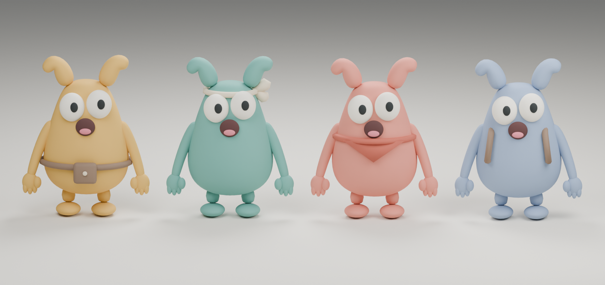

<!doctype html><html lang="ko"><meta charset="utf-8"><meta name="viewport" content="width=device-width,initial-scale=1"><title>긴 귀 4인 · 3D 모델</title><style>body{margin:0;background:#f4f1eb;color:#222;font-family:system-ui}main{max-width:1200px;margin:auto;padding:24px 12px}h1{font-size:24px}p{line-height:1.6}img{width:100%;height:auto;border-radius:12px}a{color:inherit} .hint{color:#666;font-size:14px}</style><main><h1>긴 귀 4인 캐릭터</h1><p>둥근 형태로 다듬은 3번 캐릭터 · 실제 Blender 렌더 v2</p><a href="model-rounded-v2.png"></a><p><a href="model-rounded-v2.png">사진 크게 열기 ↗</a></p><p class="hint">기본 리그 포함 · 애니메이션 및 Unity 적용 전</p></main></html>
